Planta de dos hélices (un motor encendido a la vez), encoder óptico de 2000 P/R, adquisición NI USB-6212 y control I-PD en LabVIEW.
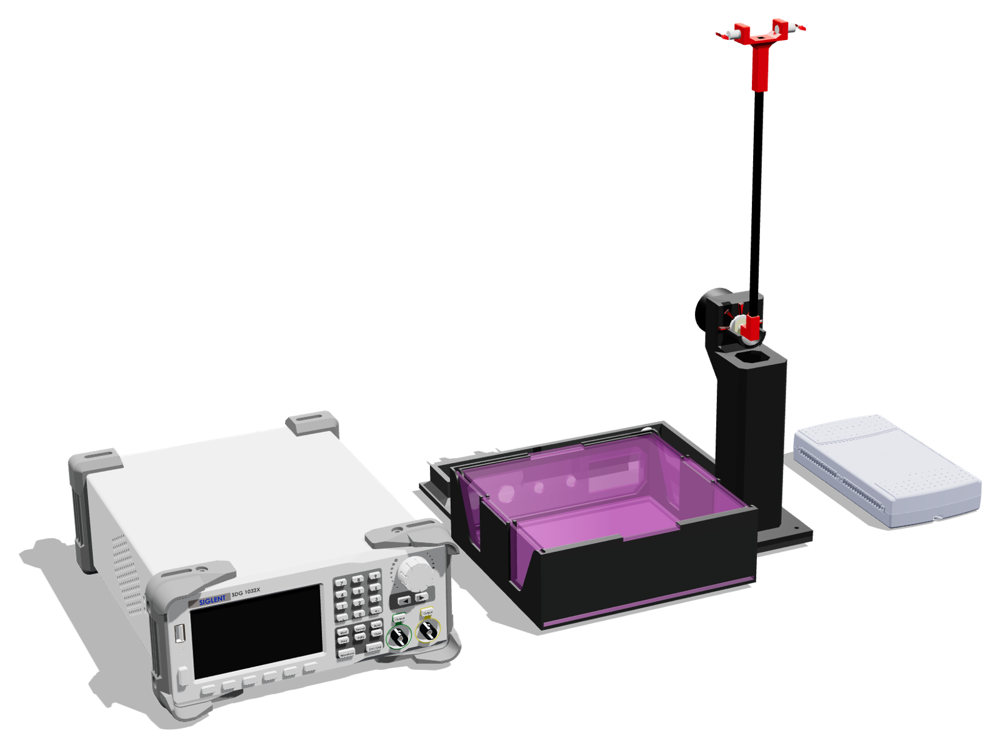
Esta guía acompaña al usuario en la operación del aeropéndulo invertido: reconocer sus componentes, conectar la DAQ, verificar el encoder, energizar la etapa PWM, ejecutar el control en LabVIEW, realizar pruebas de estabilización y apagar el sistema de forma segura.
Está pensada para que una persona con conocimientos básicos de control e instrumentación lleve la planta desde el estado apagado hasta una práctica en lazo cerrado, repita cada paso con seguridad y compare la respuesta real con la del gemelo digital.
Jarapis Lab desarrolla plantas físicas de laboratorio, modelos de simulación y gemelos digitales para aprender control clásico, adquisición de datos, PWM, identificación y validación experimental.
El aeropéndulo invertido continúa el AERO-COPTER del semestre anterior: ahora la varilla se controla en su equilibrio inestable.
Una varilla de 250 mm pivota sobre el eje de un encoder óptico montado detrás del mástil. En su extremo superior, un soporte sostiene dos motores con hélice que soplan en sentidos opuestos. Se enciende uno a la vez, y su empuje produce el torque que mantiene la varilla en la vertical, su punto de equilibrio inestable.
La planta se organiza en un mástil fijado a la base con canal de cableado y tapas, la varilla móvil con el soporte de motores en su extremo y la caja electrónica con la fuente, el regulador, el comparador y el puente H. El frente del equipo es el lado donde se ve la cara del generador de onda: allí quedan el acople y la varilla; el encoder va detrás del mástil.
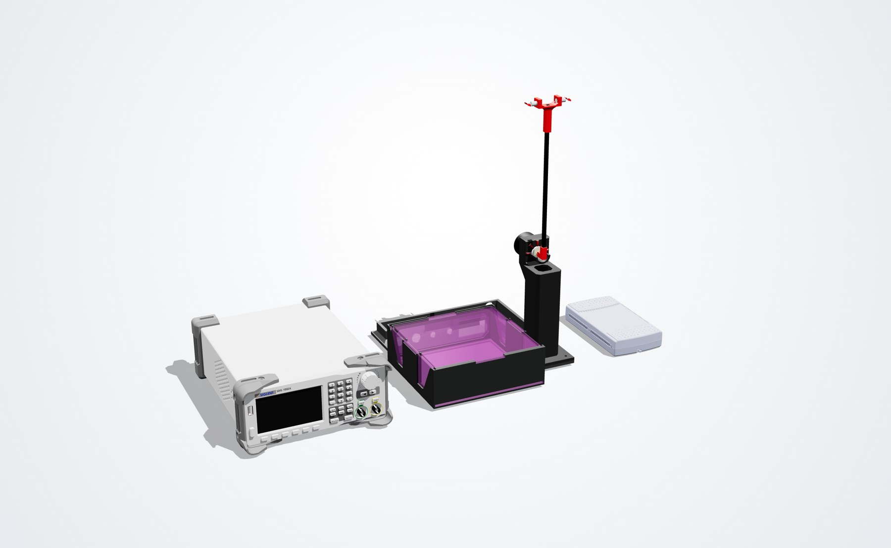
01Ensamblaje CAD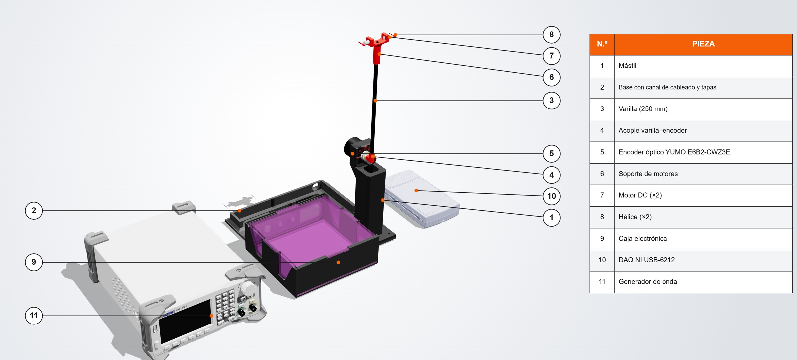
02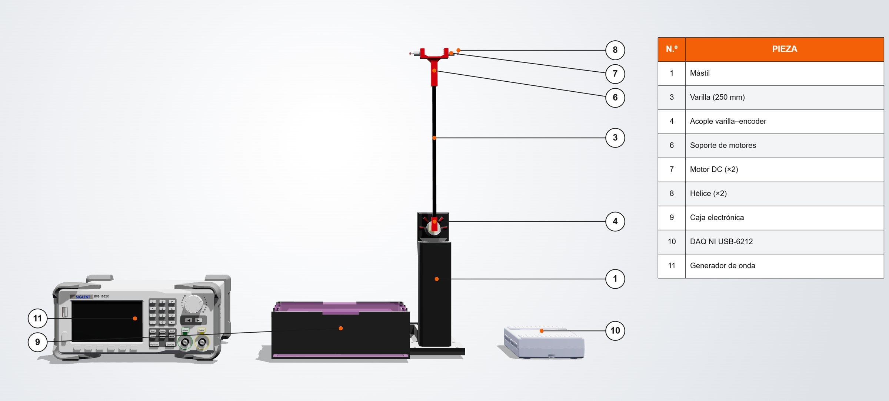
03La numeración es la misma en todas las figuras rotuladas del manual, del sitio y de la presentación.
| N.º | Pieza | N.º | Pieza |
|---|---|---|---|
| 1 | Mástil | 7 | Motor DC (×2) |
| 2 | Base con canal de cableado y tapas | 8 | Hélice (×2) |
| 3 | Varilla (250 mm) | 9 | Caja electrónica |
| 4 | Acople varilla–encoder | 10 | DAQ NI USB-6212 |
| 5 | Encoder óptico YUMO E6B2-CWZ3E | 11 | Generador de onda |
| 6 | Soporte de motores |
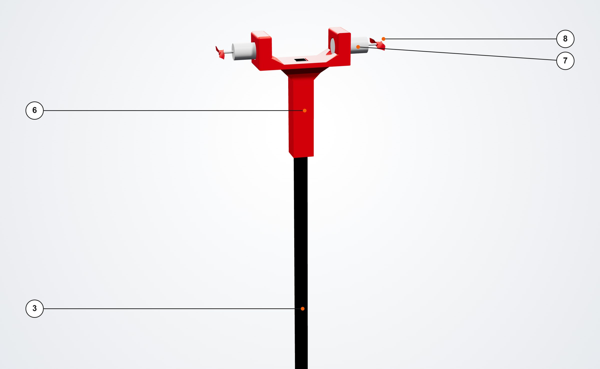
04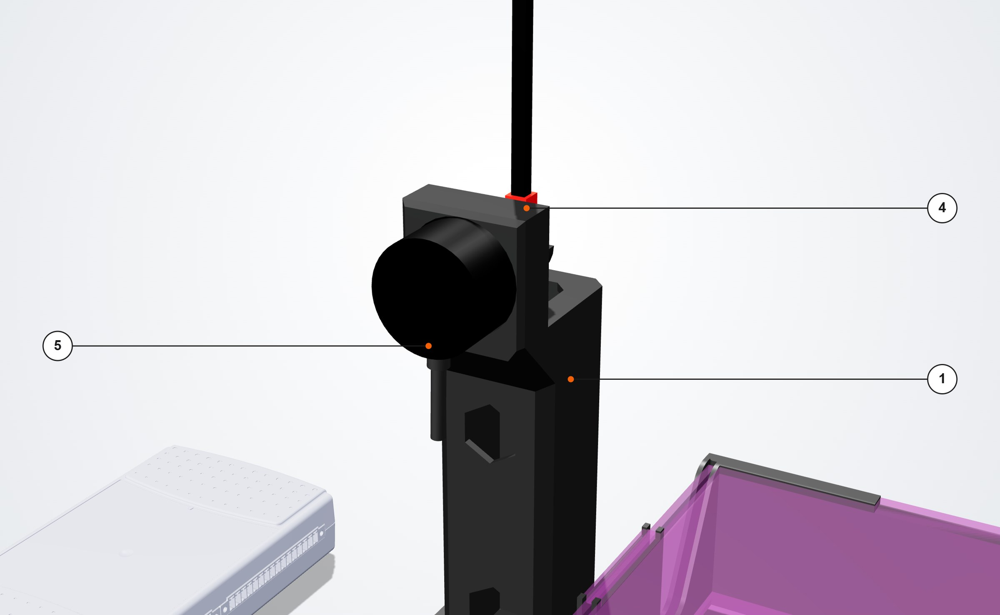
05Columna negra fijada a la base. Sostiene el encoder por detrás y define el eje de giro de la varilla.
Placa que soporta el conjunto. Su canal, cerrado con tapas, rutea y protege el cableado entre el mástil, la caja electrónica y la DAQ.
Tubo gris de 250 mm; el cableado de los motores puede pasar por su interior.
Pieza roja al frente del mástil que une la varilla con el eje del encoder: es el pivote.
Encoder incremental de 2000 P/R montado detrás del mástil. Mide el ángulo de la varilla.
Pieza roja en el extremo superior de la varilla; el eje de los motores queda a 25,5 cm del pivote.
Motores de 3,7 V nominales. Solo uno está encendido a la vez. Ensayos de escalón: casi todo/nada, 17–20 mN·m al mínimo y 44–47 mN·m saturado, τm ≈ 0,03 s; el izquierdo da ≈ 5 % más.
Hélices de 55 mm. Cada una sopla hacia afuera, así que empuja la varilla hacia el lado contrario.
Caja de PLA y acrílico con agujeros frontales para conectores. Aloja la fuente de 12 V, el regulador LM2596, la baquela con el comparador LM324 y el puente H L298N.
Lee el encoder con un contador, genera el voltaje de mando en ao0 y enciende con line0 o line1 el motor que toca. La de la universidad va dentro de una carcasa protectora; las conexiones son las de la tarjeta.
Entrega la señal diente de sierra que el comparador usa como portadora del PWM.
Ejecuta el VI de control, muestra las gráficas y registra los datos (no aparece en las figuras).
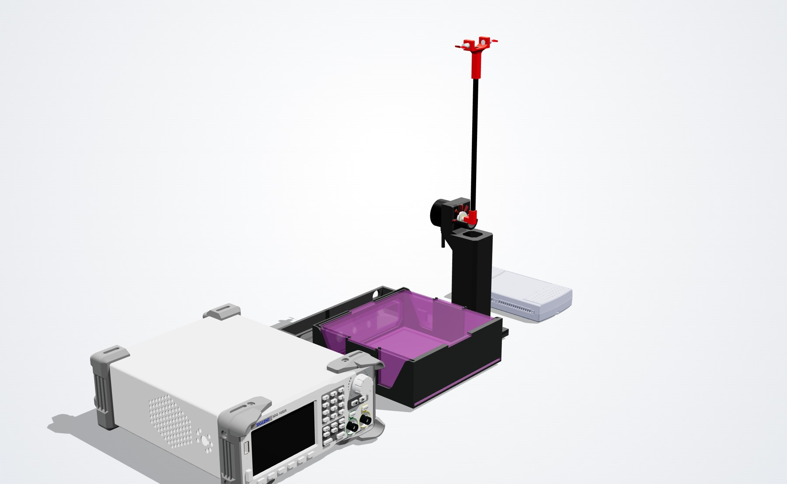
06Vista lateral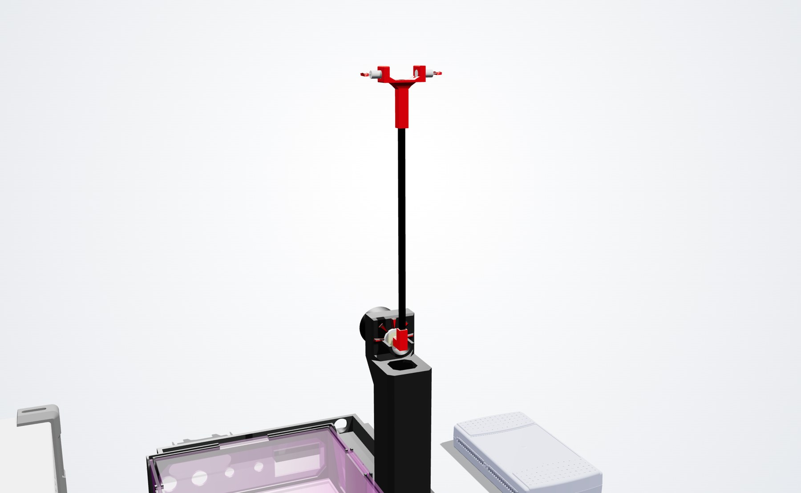
07Detalle del pénduloEl cableado se organiza en tres grupos: señal (encoder y salidas analógicas de la DAQ), potencia (puente H a motores) y alimentación (12 V, 5 V y tierra común). Todos los cables viajan por el canal de cableado de la base.
| Enlace | Desde → Hacia | Tipo |
|---|---|---|
| Alimentación principal | Fuente 12 V / 5 A → entrada del buck LM2596 | Potencia |
| Potencia de motores | Buck 5 V → L298N VS (+12V del módulo) y GND | Potencia |
| Magnitud del empuje | DAQ ao0 (borne 12) · AO GND (14) → comparador LM324 | Analógica 0–5 V |
| Motor elegido | DAQ port0/line0 (44) → L298N, motor derecho · port0/line1 (45) → motor izquierdo · D GND (43/48) | Digital |
| Portadora | Generador de onda (sierra 0–5 V, 100 Hz) → LM324 | Señal |
| PWM | Salida del LM324 → ENA y ENB del L298N (invertido: AO 0 V = máximo) | Digital |
| Sentido de giro | IN2 e IN4 a GND: cada motor gira siempre en el mismo sentido y sopla hacia afuera (verificado en el laboratorio) | Digital |
| Motores | OUT1–OUT2 → motor derecho · OUT3–OUT4 → motor izquierdo | Potencia |
| Encoder canal A | E6B2 A → DAQ PFI8 (ctr0 A) | Digital |
| Encoder canal B | E6B2 B → DAQ PFI10 (ctr0 B) | Digital |
| Alimentación encoder | +5 V → encoder +V · 0 V → GND · A → PFI8 (33) · B → PFI10 (35) | Alimentación |
| Tierra común | GND de fuente, buck, L298N, comparador, encoder y DAQ (D GND / AO GND) | Referencia |
| Datos | DAQ NI USB-6212 → PC (USB) | USB |
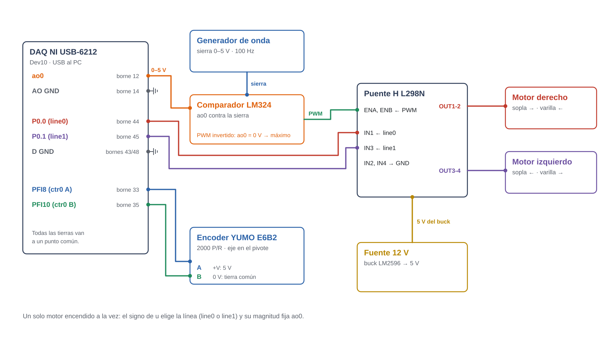
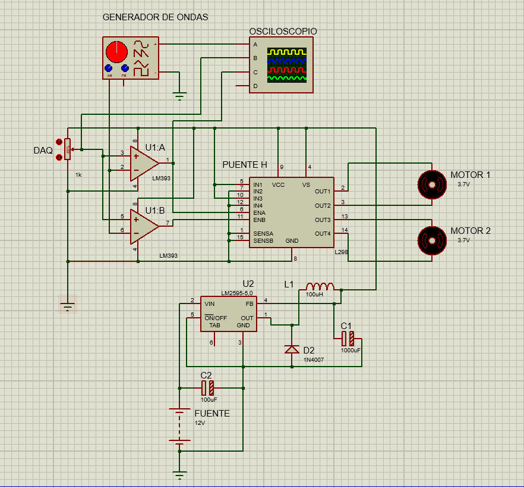
08ProteusEncoder óptico incremental de 2000 pulsos por vuelta con salidas en cuadratura A y B (y pulso índice Z). La DAQ cuenta los cuatro flancos de A y B (decodificación X4): 8000 cuentas por vuelta.
| Ángulo θ | Cuentas (X4) | Interpretación |
|---|---|---|
| 0,045° | 1 | Resolución |
| 1° | ≈ 22,2 | — |
| ±2° | ≈ ±44,4 | Límite de la especificación |
| ±15° | ≈ ±333 | Corte de seguridad sugerido |
| Señal | Color (estándar Omron) | Destino |
|---|---|---|
| +V | Café [VERIFICAR] | +5 V |
| 0 V | Azul [VERIFICAR] | GND común |
| A | Negro [VERIFICAR] | Ctr0 A |
| B | Blanco [VERIFICAR] | Ctr0 B |
| Z | Naranja [VERIFICAR] | Sin conectar (opcional) |
El voltaje de ao0 se compara con una sierra de 0 a 5 V y 100 Hz. El PWM resultante habilita (ENA/ENB) el puente H y la línea digital elige cuál motor recibe la potencia.
| Voltaje V [V] | Empuje F [mN] | dF/dV [mN/V] |
|---|---|---|
| 2,5 | 63,2 | 42,3 |
| 2,8 | 76,5 | 46,4 |
| 3,0 | 86,0 | 49,2 |
| 3,2 | 96,2 | 51,9 |
| 3,5 | 112,3 | 56,0 |
| Parámetro | Valor | Tipo |
|---|---|---|
| Inercia respecto al pivote I | 1,14 × 10⁻³ kg·m² | calculado |
| Rigidez gravitacional K | 0,0461 N·m/rad | calculado |
| Brazo del empuje Lm | 0,255 m | medido |
| Ganancia de empuje kF (u₀ = 3 V) | 49,2 mN/V | medido |
| Ganancia de torque Km = 2·Lm·kF | 0,0251 N·m/V | calculado |
| Fricción viscosa b | ≈ 1–2 × 10⁻⁴ N·m·s/rad | sin medir |
| Constante de tiempo motor-hélice τm | 0,02–0,04 s | ensayos de escalón |
| Torque de un motor | 17–20 mN·m mín. · 44–47 mN·m a AO 2,5–3,5 V · ≈ 57 mN·m a AO 0 V | ensayos de escalón |
| Topes mecánicos | −70,7° / +69,85° | medidos con el encoder |
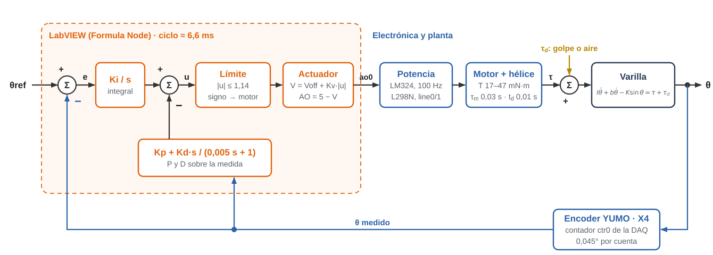
| Integral | Actúa sobre el error e = θref − θ. Se congela si u satura. |
| P y D | Actúan sobre el ángulo medido; la derivada pasa por un filtro de 5 ms. |
| Límite y motor | |u| ≤ 1,14. Si u > 0 se enciende el motor izquierdo (line1) y la varilla va a la derecha; si u < 0, el derecho (line0). |
| Actuador | V = Voff + Kv·|u| y AO = 5 − V (PWM invertido). |
Sistema SISO: dos actuadores, uno encendido a la vez, y una sola variable controlada (θ).
El VI lee el encoder con un contador, calcula el I-PD en un Formula Node, escribe el voltaje en ao0 y enciende con una línea digital el motor que corresponde.
| Tarea | Configuración |
|---|---|
| Entrada del encoder | Counter Input → Angular Encoder · Ctr0 · X4 · 2000 pulsos/rev · grados · valor inicial 0 |
| Salida analógica | DAQ Assistant · Analog Output · ao0 · rango 0 a 5 V · una muestra por ciclo |
| Salidas digitales | DAQ Assistant 3 · Digital Output · port0/line0 (motor derecho) y port0/line1 (motor izquierdo) |
| Dispositivo | “Dev10” en el PC del laboratorio; si NI MAX muestra otro nombre, cambiar el canal físico en cada DAQ Assistant |
| Temporización | While Loop con Wait de 1 ms: el ciclo real es de 6,6 ms (lo limitan los DAQ Assistant). El Formula Node mide h con el reloj del sistema (si h > 0,1 s usa 0,01 s) |
| Control / indicador | Función |
|---|---|
| Modo de arranque | Vertical (sostener a mano y soltar) · Swing up desde el tope IZQUIERDO · Swing up desde el tope DERECHO. En swing up la vertical se calcula desde el tope elegido (−70,7° o +69,85°). |
| Corte | Ángulo donde se apaga el empuje de subida para que la varilla planee (45°). Si se pasa al otro lado, súbalo (50); si no alcanza a llegar, bájelo (40). |
| Estado swing up | 0 sube · 1 planea · 2 sostiene · 3 no despegó del tope en 1,5 s: motores apagados por seguridad (casi siempre es el lado equivocado). |
| Referencia (grados) | θref; normalmente 0° (vertical). |
| Habilitar · Modo automático · Invertir sentido · Tarar | Interruptores de operación; Tarar fija el cero del encoder con la varilla vertical. |
| Voff · Vmax AO · Kv actuador · Ángulo límite | Arranque del motor (0,2 V), tope del voltaje (5 V), ganancia del actuador (0,6) y apagado de seguridad (90°). |
| PWM invertido | ON: escribe AO = 5 − V para compensar el PWM invertido del circuito. |
| Vr reposo · V cerca de 0 · V pulsos | Funciones de prueba que no mejoraron el control; deben quedar en 0. |
| Motor manual · Voltaje manual | Prueba de cada motor en lazo abierto. |
| Kp · Ki · Kd | Ganancias del I-PD, en unidades de radianes (el VI multiplica el ángulo por π/180). |
| Ángulo | θ medido por el encoder, en grados. |
| Voltaje a la AO · Motor activo · Salida u | Lo que el VI escribe en ao0, qué motor está encendido (0, 1 o 2) y la salida del I-PD. |
| Gráficas | Ángulo vs. referencia y error, con la banda de ±2°. |
| STOP | Detiene el bucle y lleva las salidas a 0 V. |
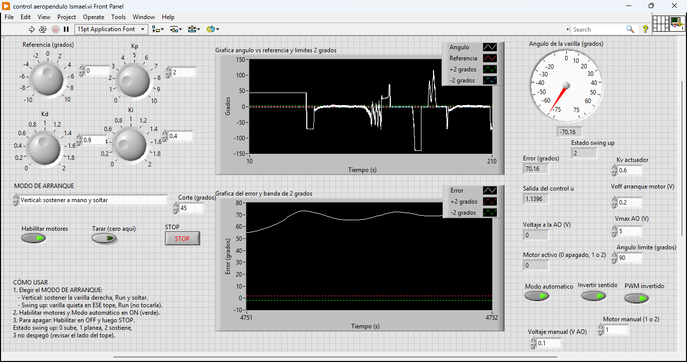
09Panel frontalEl encoder es incremental: no conoce la posición absoluta. El cero (vertical) se fija cada vez que se inicia la tarea del contador.
Motores apagados. Se verifica el encoder moviendo la varilla a mano.
Modo automático OFF, Motor manual 1 (derecho) o 2 (izquierdo) y Voltaje manual (voltaje pedido; la AO queda en 5 − V). Con la varilla sostenida se verifica hacia dónde empuja cada motor.
Modo de arranque Vertical: se sostiene la varilla derecha, se da Run y se suelta. El cero queda donde esté la varilla al dar Run.
Modo de arranque en tope izquierdo o derecho. La varilla quieta en ESE tope y las manos lejos de las hélices; al dar Run sube con empuje máximo, apaga los motores en el corte (45°) para que planee y el I-PD la atrapa a 12° de la vertical. Si se aleja más de 35°, vuelve a subir. En la planta subió en 0,57 s y quedó con 0,92° rms.
| # | Prueba | Procedimiento | Resultado esperado |
|---|---|---|---|
| 1 | Encoder | Mover la varilla ±10° con motores apagados. | Lectura coherente y repetible en ambos sentidos. |
| 2 | Motores | Modo manual, motor 1 (derecho) y luego motor 2 (izquierdo) con voltaje manual bajo (0,5 V). | Cada motor sopla hacia afuera: el derecho empuja la varilla a la izquierda y el izquierdo a la derecha. |
| 3 | Signo del control | Modo C con ganancias bajas, varilla sostenida. | Al inclinarla a la derecha se enciende el motor derecho, que la empuja hacia la izquierda. |
| 4 | Estabilización | Soltar la varilla en la vertical. | |θ| ≤ 2° sostenido. |
| 5 | Perturbación | Toque suave en la varilla. | Vuelve a la vertical sin saturar. |
| 6 | Swing up | Varilla en el tope izquierdo, Modo de arranque “tope izquierdo”, Run. Repetir desde el derecho. | Sube en menos de 1 s y queda dentro de ±2°. Estado: 0 → 1 → 2. |
| 7 | Lado equivocado | Varilla en el tope derecho con el modo “tope izquierdo”. | No despega: a los 1,5 s el estado pasa a 3 y los motores se apagan. |
Apague en orden inverso al encendido: primero el control, luego la potencia y por último las conexiones.
| Problema | Causa probable | Solución |
|---|---|---|
| El ángulo no cambia. | Encoder sin alimentación o terminal de contador equivocado. | Verificar +V y GND; confirmar Ctr0 A/B en NI MAX. |
| El ángulo deriva o salta. | Sin tierra común, ruido o niveles lógicos inadecuados. | Unir tierras; revisar con osciloscopio los canales A y B. |
| El ángulo crece en sentido contrario. | Canales A y B invertidos. | Intercambiar A y B o cambiar el signo en el VI. |
| La varilla cae hacia un lado de inmediato. | Sentido del control invertido. | Activar Invertir sentido en el panel del VI. |
| Oscila y crece. | Retardo del derivativo o del lazo; Kd bajo. | Verificar el filtro de 5 ms y el Wait de 1 ms; no bajar Kd de 0,9; bajar Kv (≈ 0,6). |
| Motores con zumbido y poco empuje. | Sierra mal configurada o EN sin PWM. | Verificar sierra 0–5 V y salida del comparador. |
| Los motores no giran. | Amplitud de la sierra, PWM invertido en OFF o líneas tomadas por NI MAX. | Ajustar la sierra a 0–5 V y 100 Hz, activar PWM invertido y cerrar el Test Panel de NI MAX. |
| El ángulo queda siempre en 0. | Botón Tarar pegado en ON. | Tarar debe ser “Latch When Released”. |
| Error de DAQ en LabVIEW. | Canal o rango mal configurado. | Revisar tareas DAQmx (§09). |
El archivo simulador.html reproduce la planta en el navegador: integra el modelo no lineal en pasos de 0,5 ms con el actuador medido, el período del VI, la cuantización del encoder, la turbulencia del aire y el ruido de medida.
Archivos: index.html (sitio) · simulador.html (gemelo) · entrenamiento.html (20 gemelos) · gemelo-core.js (modelo calibrado y Formula Node final).
| Panel | Qué permite |
|---|---|
| Prueba guiada | Equilibrio automático, soltar sin control, golpe, arrancar desde el tope, VI antes del ajuste, control externo de 2 ms, motor manual e inclinación de 12°. |
| Golpes y mano | Botones ◀ golpe y golpe ▶, flechas del teclado o arrastrar la varilla con el mouse. |
| Controlador I-PD | Kp, Ki, Kd y el filtro de la derivada. |
| Planta | Torque máximo, τm, retardo, topes y b (la única que falta medir). |
| Instrumentación | Período del lazo (2, 6,6 o 10,5 ms), ruido de medida y turbulencia. |
| Gráficas y cadena | Ángulo con la banda de ±2°, salida u, voltaje de la AO y motor activo; cadena de señal en vivo de LabVIEW al encoder. |
| Elemento | Especificación |
|---|---|
| Varilla | 25 cm · 3,5 g · tubular |
| Brazo del empuje | 0,255 m |
| Altura total (planos) | 430,57 mm · mástil 153 mm |
| Motores | 2 × DC 3,7 V nominal · hélice 55 mm |
| Encoder | YUMO E6B2-CWZ3E · 2000 P/R · A, B, Z |
| Resolución angular | 0,045° (X4) |
| DAQ | NI USB-6212 · 16 bits · 2 AO · 2 contadores de 32 bits |
| Puente H | L298N (módulo) |
| Comparador | LM324 (en baquela) · PWM invertido |
| Portadora PWM | Sierra 0–5 V · 100 Hz |
| Alimentación | Fuente 12 V / 5 A · buck LM2596 a 5 V |
| Torque por motor | 17–47 mN·m · τm ≈ 0,03 s |
| Control | I-PD · ciclo ≈ 6,6 ms · LabVIEW 2020/2021 |
| Especificación de desempeño | |θ| ≤ 2° respecto a la vertical |
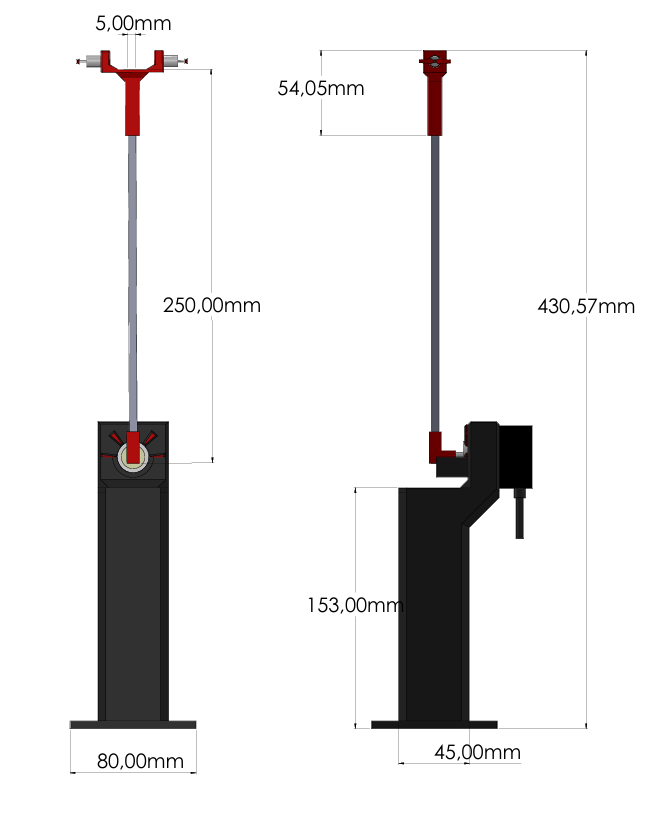
10Planos generales| Dato | Valor de este manual | Cómo confirmarlo |
|---|---|---|
| Salidas de la DAQ | ao0 (magnitud) · port0/line0 y line1 (motor) | Configuradas en el VI |
| Terminales del contador | PFI8 (A) · PFI10 (B) | Configurados en el DAQ Assistant |
| Alimentación del encoder | +5 V | Medir y revisar salida con osciloscopio |
| Colores del encoder | Estándar Omron | Etiqueta del cable YUMO |
| Frecuencia de la sierra | 100 Hz | Osciloscopio |
| Escala AO → torque | T = 47·(1 − e^(−(5 − AO)/0,42)) mN·m | Ensayos de escalón por motor |
| Niveles IN1–IN4 | Fijos, un sentido | Hoja del módulo L298N y VS usado |
| Sentido positivo de θ | Varilla a la derecha, vista de frente (+45,6° medido) | Prueba 3 (§12) |